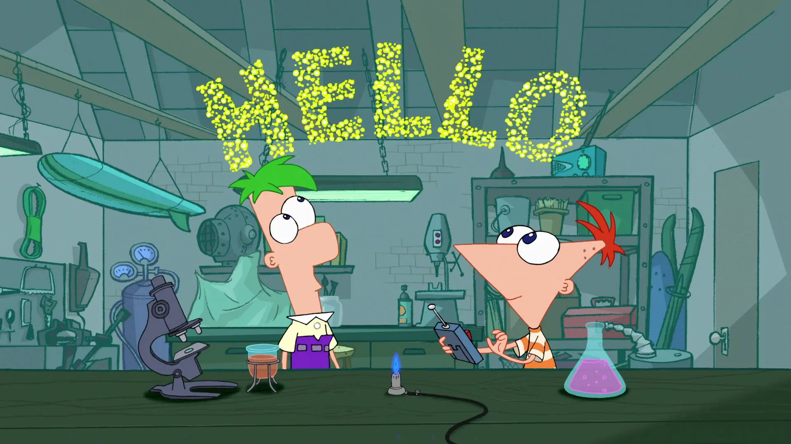

Temporada 2
¡Más inventos, más diversión!
Año: 2009-2011
Episodios: 65
Canal: Disney Channel
Episodios: 65
Canal: Disney Channel
La segunda temporada de Phineas y Ferb continúa con las aventuras de los hermanastros y sus amigos, presentando nuevos inventos, canciones y situaciones cómicas. Perry el Ornitorrinco sigue enfrentándose al Dr. Doofenshmirtz, mientras Candace no se rinde en su misión de atrapar a sus hermanos.
Momentos inolvidables

Phineas y Ferb construyen una montaña rusa aún más grande.
Perry salva el día con un nuevo disfraz de agente.
Candace casi logra atrapar a sus hermanos... ¡otra vez!